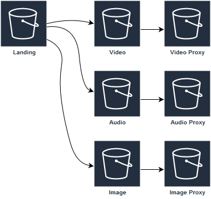
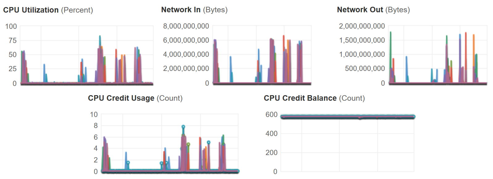

"Officially" technical lead/principle at Kablamo really a "code monkey" at heart.
func produce(c Coffee, b Beer) (Code, Cloud, error)
I blog boyter.org I free software github/boyter/ I run searchcode.com also on the twitter @boyter activitypub @boyter@honk.boyter.org
Retention policy on landing.
Degrade Gracefully.
Catch! Hides errors! Delete issue.
It's not brilliant
"melbourne~1 -melbourne"Main one. Queries across fields.
{
"query_string": {
"default_operator": "AND",
"fields": [
"person.name",
"fact",
"person.citizenship"
],
"query": "keanu canada"
}
}
Library support in Go not great. Stemming. Sorting. CPU bound.
Exploit GOPATH for multiple entry points into application.
.
├── assets
│ ├── imageproxy
│ │ └── main.go
│ ├── load
│ │ └── main.go
│ ├── merge
│ │ ├── audio
│ │ │ └── main.go
│ │ ├── bulk
│ │ │ └── main.go
│ │ ├── cleanup
│ │ │ └── main.go
│ │ ├── oldvideo
│ │ │ └── main.go
│ │ ├── photo
│ │ │ └── main.go
│ │ ├── video
│ │ │ └── main.go
│ │ └── wvideo
│ │ └── main.go
│ ├── transcodeFinished
│ │ └── commandline
│ │ └── main.go
│ └── transcodeStart
│ └── commandline
│ └── main.go
Excellent with SQS support. But have to code own multipart.
for _, sqsmsg := range messages.Messages {
// We don't want to wait for these to finish anymore but let them run in the background
// and finish whenever they are done and naturally exit. As such no need for a waitgroup
// here anymore
go func(sqsmsg *sqs.Message) {
Network bound. T3 burstable network really helps!!
Annoying when many can request. Store in DB and on event update all matches. Expire after 24 hours. Hard to predict expiration.
Have an endpoint that exposes most environment variables.
{
"environment": {
"AppEnvironment": "PROD",
"AudioMasterBucket": "archives.master.audio",
"AudioProxyBucket": "archives.proxy.audio",
"AwsRegion": "ap-southeast-2",
"DownloadExpiryMinutes": 1440,
"ElasticEndpoint": "https://elastic-archives.content/",
"FrontendEndpoint": "https://archive.content",
"HttpTimeoutSeconds": 20,
"LandingBucket": "archives.landing",
"MetadataBucket": "archives.records.prod",
"PhotoBucket": "archives.photo",
"PhotoBucketProxy": "archives.proxy.photo",
"PortNumber": 8080,
"SystemEnvironment": "Archive",
"SystemEnvironmentDisplayName": "Archive",
"UploadExpiryMinutes": 1440,
"VideoMasterBucket": "archives.master.video",
"VideoProxyBucket": "archives.proxy.video"
}
}AWS Changes, Fargate (CPU), Private API-Gateway, Server-less Aurora, Bucket cleaning, Instance types R5
Taxonomy storage.
Probably more lambda. 15 min timeout.
S3 key names. Maybe GORM. Proxy!
GA Jan. Culture change.
Presentation located at https://boyter.org/static/golang-syd-25th-may/ or just go to boyter.org and I will link it up tomorrow.